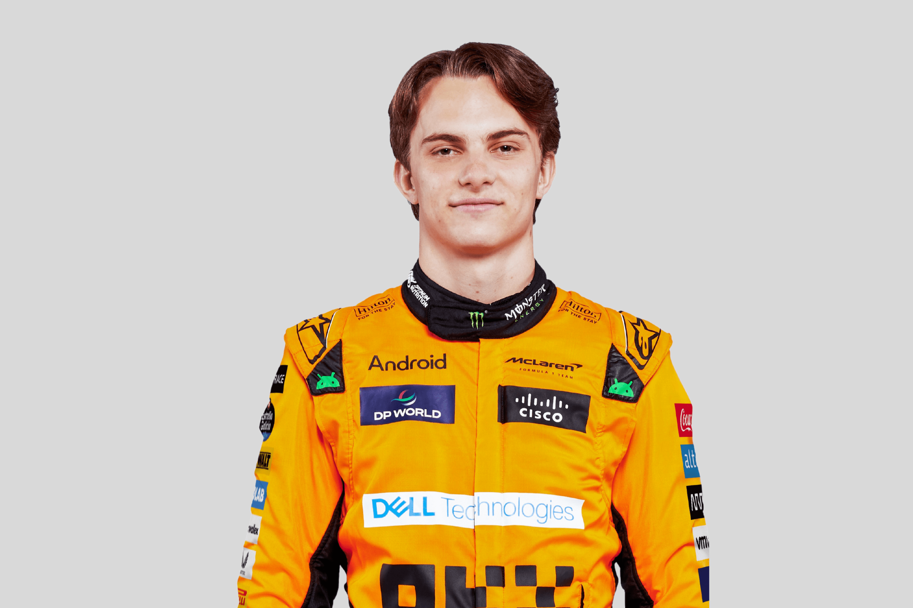
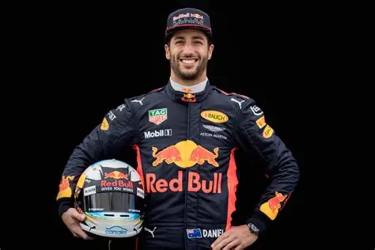
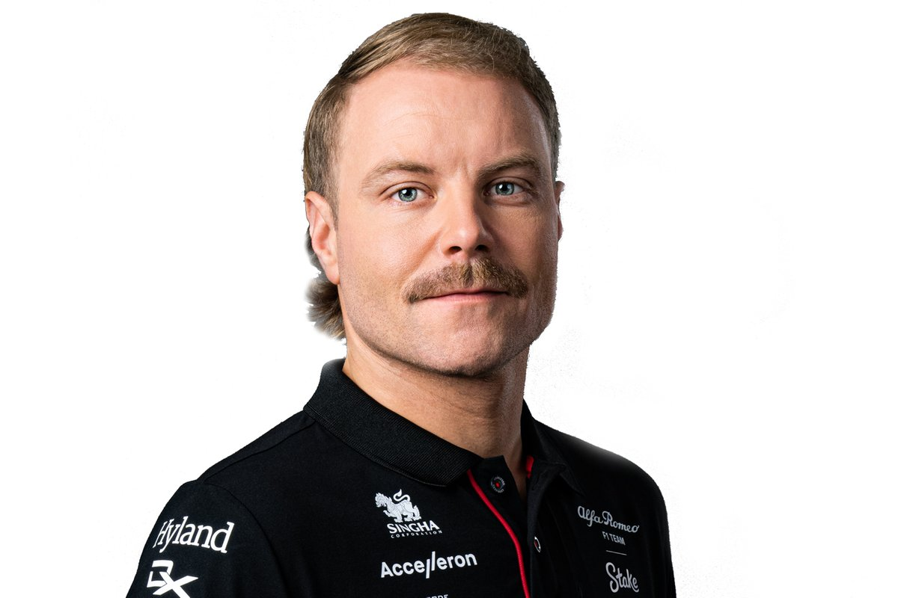

WYRÓŻNIENI KIEROWCY
Oto kilku wyróżnionych przeze mnie kierowców.
Charles Leclerc - monakijski kierowca wyścigowy jeżdżący w latach 2018 do teraz. | |

| Lando Norris - brytyjski kierowca wyścigowy startujący w Formule 1 w latach 2019 do teraz. |
|  | Oscar Piastri - australijski kierowca, rywalizujący w latach 2023 do teraz. |
|  | Daniel Ricciardo - kierowca F1 pochodzący z Australii, jeżdżący w latach 2011 - 2024. |
|  | Valtteri Bottas - fiński kierowca startujący w Formule 1 od 2010 do 2024. |
George Russell - brytyjski kierowca F1 startujący w latach 2019 do teraz. |
A teraz prawdziwy game changer

| Robert Kubica - polski kierowca wyścigowy, startujący w F1 w latach 2006 - 2011 i 2019 - 2022. Był pierwszym Polakiem jeżdżącym w F1. |